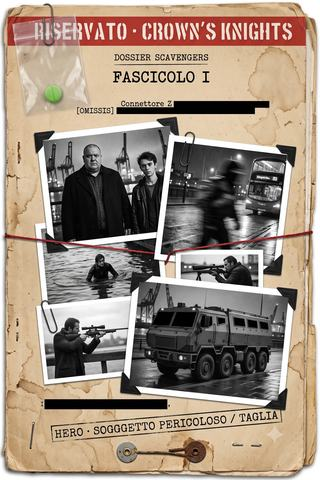

Dossier Scavengers · fascicolo I
Le taglie di Londra
Come nasce una banda di antieroi nell'attico di un uomo che li disprezza — e come scopre che, nella Londra dopo l'evento zero, anche i mostri hanno una taglia. L'infiltrazione tra i Tottenham, la prima strage in mare.
- ≈ 40 min di lettura
- a cura dell'Analista
- dalle partite a Heroes Unlimited
- anche in EPUB, 1,1 MB
Nota dell’Analista
RISERVATO — CAVALIERI DELLA CORONA
Dossier Scavengers · fascicolo I
Questo primo fascicolo raccoglie la costituzione del gruppo poi noto come «Scavengers» e i suoi primi atti: come otto individui — sei con capacità Z accertate o sospette, una tecnologa e un civile — siano finiti sotto lo stesso tetto sulla scorta di una taglia da mille sterline, e come da quella taglia si giunga, nel volgere di poche settimane, a una nave da carico alla deriva con l’intero equipaggio disperso. Vi confluiscono deposizioni dei soggetti, referti forensi, intercettazioni e ritagli di stampa.
Chi legge tenga presente un’avvertenza che tornerà: alcuni di questi verbali risultano più ordinati di quanto le scene descritte avrebbero consentito. L’Analista ne dà conto dove necessario; dove non può, scrive [OMISSIS].
Una taglia da mille sterline pare poca cosa per rischiarvi la pelle. Basta, come si vedrà, a spiegare l’inizio.
Indice
A cura dell’Analista.
- Le taglie di Londra (autunno · Soho, i docks, la foce del Tamigi) — una banda si forma, si affilia, e impara che in mare non ci sono testimoni.
- Allegato · Schede dei soggetti — i profili degli otto, così come questa unità è riuscita a comporli.
Cronologia del caso
Il mondo si conta dall’«evento zero» del 2012 (la comparsa delle radiazioni Z e dei primi HERO). I fatti qui raccolti si svolgono nell’autunno londinese del presente. In grassetto la tranche raccolta in questo volume.
- autunno — Le taglie di Londra (Arlecchino / Miwa) — l’attico di Lord; la taglia di Khan; i Blue Angels e la cattura di «Kevlar»; Arlecchino tra i Tottenham; il carico d’armi e la strage sul cargo.
- autunno — La caccia ai cinque (Mau / BORIS / Darko) — i cinque HERO dei Ghetto Boys; il parcheggio; la trappola della gabbia.
- autunno — Il panfilo (Darko / Arlecchino / Lord) — la crociera di Modi Mittal; l’attacco dei Leakers; la partenza per l’Isola di Man.
Le date esatte restano incerte — nel mondo dopo l’evento zero nessuno tiene più un calendario —, ma i fatti qui raccolti si collocano tutti nel medesimo autunno.
Le taglie di Londra
RISERVATO — CAVALIERI DELLA CORONA Fascicolo I · costituzione e primi atti del gruppo detto «Scavengers»
Relazione dell’Analista. Agli atti di questa unità risulta che otto individui — sei dei quali dotati di capacità Z accertate o fortemente sospette, gli altri due una tecnologa e un civile con trascorsi nelle forze speciali — si sono associati nell’autunno in oggetto sotto un unico tetto, e che il pretesto della loro associazione è stato una taglia da mille sterline.1
Si dà atto, per dovere di sintesi, di come una cifra tanto modesta abbia portato, nel volgere di poche settimane, al ritrovamento di una nave da carico alla deriva alla foce del Tamigi con l’intero equipaggio disperso.
La presente relazione ricostruisce quel percorso sulla base delle deposizioni acquisite, di due diari sequestrati, dei referti forensi e della rassegna stampa. Il curatore non migliora i fatti: li ordina. Dove la fonte tace, si scrive [OMISSIS]. Dove due mani si contraddicono, si lasciano contraddire.
Si segnala, in via preliminare e senza per ora trarne conseguenze, che alcuni dei verbali confluiti in questo fascicolo risultano più ordinati di quanto la scena avrebbe consentito.
1 · L’attico
L’immobile in cui i soggetti si sono radunati è un attico intestato, per il tramite di tre società, al soggetto indicato nelle deposizioni come «Lord»: cittadino britannico, ex incursore, poi cacciatore professionista e, secondo fonti non riscontrabili, contractor per la disciolta Aegis Defence Services.2 Alle domande sulla ragione per cui un uomo di quel profilo abbia offerto ospitalità a sette metaumani che dichiara apertamente di disprezzare, il soggetto ha risposto, agli atti, con una sola frase: che un buon cacciatore tiene la muta in casa, non al canile.
L’odio del soggetto Lord per gli HERO ha, del resto, una data e un luogo. Prima dell’evento zero buona parte del suo patrimonio era custodita a Ginevra. Ginevra, dall’evento zero, è un cratere radioattivo. Il soggetto non ne parla come di una tragedia, ma come di un furto: qualcuno gli aveva portato via qualcosa, e quel qualcuno, nella sua contabilità, erano i metaumani in blocco. Che poi si ritrovasse ad abitare con sei di loro — e con una tecnologa che li teneva a bada meglio di lui — non gli pareva una contraddizione. Un uomo può odiare i lupi e allevarne una muta: tutto sta in chi vuole dare loro in pasto.
L’attico offriva camere per gli ospiti, una certa logistica e alcune conoscenze fra le autorità. Offriva soprattutto una cornice di normalità a un consesso che di normale non aveva nulla: otto persone che, sedute allo stesso tavolo, componevano meno una squadra che un incidente. Da questo tavolo, la prima sera, uscì l’idea di monetizzare la taglia del Sindaco.
Dei sette ospiti l’unità ha ricostruito, a quella data, un quadro sommario.
Il soggetto Darko, cittadino italiano, prestava servizio come consulente forense presso la Polizia Metropolitana; capacità psioniche non dichiarate e, a quella data, non rilevate da alcuno. Il soggetto Mau Kamekona, samoano, medico in formazione presso l’Imperial College, stazza fuori norma. Il soggetto William «T» Guile, cittadino statunitense, già inquadrato nei corpi speciali dei Marines. Il soggetto Serghiey Cherenko, ucraino, noto negli ambienti della lotta clandestina come BORIS. Il soggetto Filippo Del Corvo, milanese, infermiere. Il soggetto indicato solo come Miwa, cittadina giapponese, tecnica; priva di capacità Z — come, del resto, lo stesso Lord — ma, a differenza di Lord, risoluta a colmare la lacuna con mezzi propri. E il soggetto Cagliostro Veneziani, napoletano, che nelle deposizioni di tutti gli altri compare esclusivamente con il nome di «Arlecchino».
La deposizione di quest’ultimo apre il fascicolo perché è l’unica, fra quelle acquisite, a spiegare come si diventi ciò che questi individui sono diventati.
Dovete capire una cosa, e ve la dico buona: io a Londra non ci sono venuto per fare il cattivo. Io a Londra ci sono venuto perché a Napoli l’aria s’era fatta pesante, e non per colpa mia. Uno nasce ai Quartieri, uno impara a arrangiarsi, fin qui niente di male. Poi arriva la giornata dell’evento, quella cosa lì, lo zero, e a me che mi succede? Che mi butto a mare al Molosiglio come faccio da quando ero criaturo, e sott’acqua ci resto un’ora, due, e respiro come una spigola. Bello, eh. Comodo pure. Solo che tu prova a spiegarlo, ai fratelli tuoi, che tu sott’acqua ci respiri e loro no. Prova. Quelli o ti fanno santo o ti fanno a pezzi, e a Napoli è più facile la seconda. Così ho preso la nave — la nave, capite l’ironia — e me ne sono venuto qua, dove uno come me nessuno lo conosce e tutti hanno bisogno di uno che sa nuotare.
Si dà atto che il soggetto, nel rendere la deposizione, ha impiegato oltre metà del tempo a disposizione descrivendo circostanze estranee ai fatti contestati.
Il soggetto Lord, secondo quanto agli atti, riunì gli ospiti la prima sera attorno a una notizia di cronaca cittadina: l’ordinanza con cui il Sindaco aveva istituito un premio in denaro — mille sterline — per ogni membro di gang consegnato all’autorità corredato di prove delle sue attività. L’ordinanza era, nelle intenzioni, uno strumento di ordine pubblico. Nell’attico venne intesa diversamente.
Lord ci ha messo il foglio in mezzo al tavolo come si mette una portata. Ha detto: signori, la città paga chi le toglie la spazzatura di torno, e voi siete otto persone che la spazzatura sanno dove sta di casa. Io ho fatto il conto subito, perché io i conti li faccio sempre: mille a testa, e di teste in giro ce n’è quante ne vuoi. Il giapponese — la giapponese, scusate, Miwa — non ha detto niente, stava in un angolo a smontare una cosa che faceva un rumore che non mi piaceva. Boris rideva. A me mi piaceva l’idea. Mille sterline non sono niente, ma mille sterline moltiplicato è una cosa seria, e poi c’era il gusto. Il gusto conta.
L’unità osserva che, di tutte le motivazioni addotte dai soggetti nelle rispettive deposizioni, «il gusto» è l’unica ricorrente.
Vale la pena, prima di procedere, di soffermarsi sugli otto, perché la loro composizione spiega gran parte di ciò che segue. Un gruppo si comporta come è fatto, e questo era fatto male.
Il soggetto Cherenko, detto BORIS, era stato prodotto. Il termine è improprio ma nessun altro rende l’idea: agli atti risulta l’esito del primo esperimento riuscito di potenziamento organico da irraggiamento, condotto in ambito militare fra ricercatori ucraini e consulenti d’oltreoceano, e destinato all’impiego contro le milizie del Donbass.3 Trasferito nella capitale per sottrarlo al controspionaggio avverso, il soggetto vi conduceva la vita di chi è stato costruito per la guerra e si ritrova senza guerra: lottava in gabbia, mangiava molto, e maltrattava ogni lingua che tentava con la medesima, ostinata sicurezza, sì da risultare comprensibile solo a forza di buona volontà altrui. Lo scortava, o lo aveva scortato, il soggetto Guile.
Il soggetto Guile, statunitense, dotato di velocità superiore all’umana e di un campo di forza difensivo che egli stesso chiamava «aura», proveniva dai corpi speciali dei Marines, dove l’addestramento non era stato completato. Nelle deposizioni degli altri soggetti egli compare come l’unico animato da qualcosa che assomigli a un codice, per quanto appreso al cinema: si esprimeva per formule da film d’azione e pretendeva, nel bel mezzo di operazioni criminali, forme di lealtà cavalleresca che i compagni trovavano di volta in volta commoventi e d’intralcio.
Il soggetto Kamekona, samoano, era la mente colta del gruppo e ne era anche, per stazza, la mano più pesante. Medico in formazione, si era avvicinato alla materia degli HERO non per vocazione poliziesca ma per curiosità di ricercatore: voleva capire perché le capacità Z si manifestassero in individui presi a caso, e riteneva la capitale — nodo del traffico di Connettore Z — il luogo giusto per capirlo. Lo affiancava il soggetto Del Corvo, detto «il Gracile» per antifrasi, milanese, già pesista, dotato di forza sproporzionata e di una vista che attraversava le pareti; di professione infermiere, di indole borghese e lombarda, era stato introdotto nel giro dallo stesso Kamekona.
Del soggetto Darko si è detto: consulente forense, psionico non dichiarato, il solo del gruppo la cui utilità principale consisteva nel trovarsi, per mestiere, dalla parte giusta del nastro che delimita le scene del crimine. Il soggetto Miwa — l’unica del gruppo, con Lord, priva di capacità Z — è una tecnologa giapponese proveniente dalla divisione militare di una nota compagnia, dove costruiva servoarmature concepite per fermare gli HERO. La sua presenza fra sei di loro è, agli atti, l’anomalia più istruttiva del gruppo, e vale la pena udirla dalla sua voce.
Sono l’unica qui che non ha poteri, e l’unica che li capisca. In patria progettavo il modo di fermare quelli come loro: armature, un deterrente contro gli HERO che dilagano dappertutto — tranne che da noi, in Giappone, dove non ne nascono, e nessuno sa perché. Poi mi sono ritrovata a lavorare per sette di loro, in una città che ne pullula. Qualcuno lo chiamerebbe voltafaccia. Io lo chiamo ricerca sul campo: per capire un’arma, conviene dormirci accanto. Li aiuto e intanto li studio. È lo stesso lavoro di prima, solo più vicino al bersaglio.
Quella prima sera, mentre gli altri discutevano di taglie, ella smontava in un angolo un dispositivo che nessuno le aveva chiesto di smontare, e il rumore che ne veniva, a detta di più deposizioni, non piaceva a nessuno. Del suo progressivo distacco dalla vita altrui — che i fatti, e non queste note, chiameranno in causa — si dirà a suo tempo.
E il soggetto Veneziani, l’anfibio, che di tutti era il più fragile e il più affamato, e che per questo si sarebbe cacciato, e li avrebbe cacciati, nei guai peggiori.
Otto capi e zero soldati, l’ho già detto. Ma la verità è un’altra, e ve la dico perché tanto ormai. La verità è che eravamo otto persone che nessuno voleva. Il soldato americano che non avevano finito di addestrare. Il russo — l’ucraino, vabbè — che dovevano nascondere. Il dottore troppo intelligente per il posto dove l’avevano messo. Io, che a casa mia mi facevano a pezzi. Lord ci ha raccolti come si raccolgono i cani che nessuno reclama, e ci ha dati da mangiare, e per un po’ abbiamo pensato che fosse buono. Poi ho capito che uno che raccoglie i cani lo fa perché a caccia i cani servono. Ma quando l’ho capito stavo già bene, nella cuccia.
2 · Steve, l’uomo pesce
Il primo atto documentato del gruppo risale alla settimana successiva e riguarda la gang minore denominata Blue Angels, affiliata alla più estesa struttura dei Ghetto Boys. I soggetti Cherenko e Veneziani vi entrarono in contatto per la via, si direbbe, più diretta: le arene di lotta clandestina, dove il soggetto Cherenko conseguì in breve una serie di vittorie che gli acquistarono, oltre a un certo credito, l’attenzione degli organizzatori.
Le arene erano scantinati e magazzini dismessi, la clientela mista e danarosa, le scommesse alte. Il soggetto Cherenko vi si presentava come combattente a mani nude e vi vinceva senza ricorrere in modo evidente alle proprie capacità Z, il che — agli occhi di un pubblico che pagava per vedere del sangue e non del prodigio — valeva più di qualunque prodigio. Una di quelle sere l’organizzatore, descritto negli atti come un portoricano dai capelli tinti, invitò i due soggetti a proseguire la serata in un locale di Soho.
Boris vince e a Boris gli danno le ballerine. A me no. Io sto lì, seduto, che ho pure scommesso su di lui e ho vinto, e non mi caga nessuno. Allora vado al bancone offeso, mi metto a guardare il Manchester coi fratelli, e giusto in quel momento — giusto quando faccio finta di non volere niente — arriva lei. È così che funziona sempre, avete presente? La vuoi, non arriva. Fai finta di niente, arriva. La vita è tutta un fare finta di niente.
Fu in quel locale — sede di ritrovo dei Tottenham Mandem, cellula degli Jamaican Yardies — che al soggetto Veneziani venne fatta una proposta.
C’era una femmina. Voglio essere preciso, perché sennò non si capisce niente: c’era una femmina. Di quelle che quando entrano nel locale il locale cambia pressione, come quando scendi sott’acqua e ti senti le orecchie. Lavorava lì, o faceva finta, e mi si è seduta vicino mentre guardavo la partita del Manchester, e mi ha detto che se le portavo un certo tale mi facevano entrare. Entrare dentro. Nella famiglia. E io — mettetevi nei panni miei — io da quando sono a Londra sto sempre di fuori, sempre col naso al vetro. Uno mi offre di entrare e per giunta me lo offre con quella scollatura lì, e io che faccio, dico di no? Ho detto di sì prima ancora che finisse la frase.
La sera in cui al soggetto Veneziani fu fatta quella proposta è la stessa in cui, sulla porta di quel medesimo locale, si consumò l’episodio che la stampa avrebbe battezzato «il massacro del Jambo’s Club». Mentre all’interno l’anfibio contrattava la propria affiliazione, gli addetti alla sicurezza venivano fatti a pezzi da un metaumano rimasto ignoto, e la strada si riempiva di persone che riprendevano lo scempio con i telefoni. Il gruppo non ebbe parte in quei fatti. Se ne dà conto perché il giorno seguente, con quelle immagini in ogni telegiornale, la città si svegliò diversa: più impaurita, più incline a chiedere pugno duro, meno interessata a distinguere fra un metaumano e l’altro.4
È in quel clima che va collocato tutto ciò che segue. Questa unità stessa — i Cavalieri della Corona — nasce da quel clima: da una paura cittadina che chiedeva qualcuno che si occupasse dei mostri, e che non guardò troppo per il sottile a chi arruolava per farlo. Si tenga a mente. Tornerà.
Il «certo tale» era un metaumano indicato negli atti come Steve: gene-zeta anfibio dotato della capacità di manipolare la luce e di mimetizzarsi, impiegato dai Blue Angels come corriere per il traffico di Connettore Z lungo il fiume.5 Le deposizioni concordano sulla dinamica della cattura. La squadra individuò dapprima l’alloggio del bersaglio — un container abitativo, in un piazzale lungo il fiume — e vi trovò conferma della sua natura anfibia e della sua capacità mimetica: il soggetto Steve si confondeva con il ciarpame circostante manipolando la luce, e fu la sua stessa impazienza a tradirlo.
L’operazione fu condotta con una cura che sarà bene tenere a mente, perché in séguito il gruppo l’avrebbe smarrita. Il soggetto Lord copriva il piazzale attraverso un’ottica notturna, appostato a distanza; nelle sue parole, agli atti, era «moderatamente preoccupato» per la sorte del soggetto Veneziani, ma non tanto da aprire il fuoco. Il soggetto Guile era acquattato dietro un cassonetto a un centinaio di metri — un nulla, per lui. I soggetti Kamekona e Lord provvidero, a operazione conclusa, a ripulire il magazzino da tracce biologiche e a far sparire nel fiume i corpi delle vittime del breve scontro. Ciascuno al suo posto, ciascuno al suo compito: una macchina che, per una sera, funzionò.
Il soggetto Veneziani contattò il bersaglio tramite l’apparecchio telefonico sottratto al capobanda Alvarez; all’emersione, non ricevendo risposta dai propri e imprecando contro di loro, il soggetto Steve fu neutralizzato da una scarica elettrica del Veneziani e da un colpo del soggetto Guile.
Segue, agli atti, un interrogatorio. Il soggetto Steve non fornì informazioni, confidando — a ragione, per quanto lo riguardava, ma non nei tempi che sperava — di essere presto liberato dai propri. Le deposizioni riferiscono di «maniere scorrette» impiegate dal soggetto Veneziani. Il particolare è annotato senza enfasi: è, di tutto il fascicolo, uno dei fatti minori.
Non ha parlato. Che poi io manco lo volevo far male sul serio, l’uomo pesce, ci somigliavamo pure, due che respirano dove gli altri affogano. Ma quando uno non parla e tu hai fretta, la mano ti scappa. Non me ne vanto. Non me ne pento manco, eh. Dico solo che la mano scappa, e a Londra scappava spesso.
Si dà atto che, nel corso della medesima operazione, i soggetti procedettero alla rimozione dei corpi di alcuni membri della gang nel fiume, e alla bonifica del deposito da tracce biologiche. Nella deposizione del soggetto Veneziani questa circostanza è riferita in una subordinata.
…e mentre Lord e il samoano facevano pulizia — perché quelli in pulizia ci sanno fare, il samoano poi con quel fisico — io stavo lì che aspettavo il pesce, tranquillo, che tanto lo sapevo che veniva.
Dalla valigetta stagna in possesso del soggetto Steve fu recuperato un quantitativo di Connettore Z valutato in oltre mezzo milione di sterline. La sostanza — droga Z-attiva, capace di conferire capacità sovrumane temporanee — costituisce, agli atti di questa unità, il filo che lega le gang di strada a interessi assai superiori alla strada.6 Il dato, in questa fase, non fu colto da alcuno dei soggetti.
Il soggetto Steve fu invece sottratto al gruppo dallo stesso Veneziani, che lo consegnò — privo di sensi — alla donna dei Tottenham, incassando così la propria affiliazione: appuntamento per la presentazione ufficiale alla banda, il sabato successivo. Si dà atto che l’anfibio, unico anello vivo della catena di rifornimento del Connettore Z lungo il fiume, uscì così dalla disponibilità dell’autorità e passò da una gang all’altra come merce di scambio. Il soggetto Veneziani, nella deposizione, considera l’operazione un successo personale.
Il gruppo consegnò invece all’autorità i membri superstiti dei Blue Angels, fra cui il metaumano Lucio «Kevlar» Coymbra, la cui pelle risultava impenetrabile agli oggetti dotati di elevata energia cinetica. La consegna avvenne il mattino seguente, presso la centrale, per il tramite della prevista trafila burocratica: convalida dei fermi, verbalizzazione, riscossione. A occuparsene furono i soggetti Kamekona e Lord, che di tutti erano i due più presentabili a un ufficio.
La consegna fruttò diecimila sterline complessive di taglia, con un sovrappiù per la cattura del Coymbra, noto agli archivi della Polizia Metropolitana per una lunga lista di precedenti e di incidenti occorsi ad agenti nel corso di precedenti operazioni. A ricevere il gruppo fu l’ispettore Kravos, della comunità greca, indicato dal soggetto Lord come persona «di cui ci si può fidare»; il che, nel lessico del soggetto Lord, significa persona che non formula domande. L’ispettore Kravos non ne formulò. La droga sequestrata e le prove raccolte gli parvero sufficienti a non doverne formulare.
Nel corso della medesima mattinata, tuttavia, un secondo funzionario si avvicinò ai due soggetti nell’atrio della centrale.
Era un tecnico della scientifica. Formulò le sue domande con precisione — una precisione che mise i due soggetti sul chi vive, perché verteva su scarti fra come le cose si erano svolte e come erano state verbalizzate — e sul momento parve non lasciare strascichi. Li lasciò invece: quella sera stessa si presentò di persona all’abitazione dei soggetti.7
Questo qua ha capito tutto. Non un po’: tutto. Ha capito come si erano svolte le cose e ha capito che erano state verbalizzate in un altro modo, e uno con quella faccia lì di solito o ti ricatta o ti arresta. E invece no. Invece ci voleva aiutare. Diceva che gli HERO nelle gang erano il problema vero, che le forze dell’ordine non li toccavano, e che noi eravamo lo strumento giusto. Io l’ho guardato e ho pensato: a Londra pure i buoni sono strani.
L’unità rileva che, a questa data, il gruppo disponeva già di un contatto compiacente in dogana, di un ispettore accondiscendente e di un consulente interno agli organi inquirenti. Rileva altresì che di quest’ultimo — il tecnico della scientifica — nel fascicolo non risulta il nome. [OMISSIS].
3 · Il verme e la famiglia
Ottenuta l’affiliazione, il soggetto Veneziani ricevette dai Tottenham il primo incarico operativo: la sottrazione di un carico di armi leggere destinato ai Ghetto Boys, e da questi atteso per regolare in via definitiva il conflitto fra le due strutture.
Le informazioni sull’operazione gli furono trasmesse su un tablet. Il tablet conteneva anche un secondo, non richiesto messaggio.
Io le cose di computer non le capisco, lo dico. Io porto il coso a Miwa, che quella lì le macchine le capisce meglio delle persone — anzi, togliete il «meglio», diciamo che le persone non le capisce e basta. E lei apre ’sto tablet e comincia a sorridere. Quando Miwa sorride io mi preoccupo, l’ho imparato presto. Aveva trovato un verme. Un programma nascosto, dei Tottenham, che serviva a spiarmi, a capire se di me ci si poteva fidare. Bella fiducia, la famiglia.
La deposizione del soggetto Miwa torna qui, e per la prima volta sui fatti operativi. Si riporta integralmente il passaggio pertinente, segnalando che l’unità ne raccomanda la lettura non per il contenuto tecnico, ma per il registro.
Il worm era un lavoro mediocre. Prodotto in serie, firme note, nessuna eleganza: il genere di cosa che si compra, non che si scrive. L’ho lasciato dov’era e gli ho cucito accanto uno dei miei, che fa la stessa identica cosa nella direzione opposta — così mentre loro credevano di guardarci dentro, eravamo noi a stare dentro di loro. È molto semplice, quando le persone si fidano dei propri strumenti. Le persone si fidano sempre dei propri strumenti. È il loro difetto principale, e non è l’unico.
Attraverso il mio innesto abbiamo ottenuto le schede dei cinque. Cinque metaumani nei ranghi dei Ghetto Boys. Le ho archiviate con cura, perché avrei avuto bisogno di sapere esattamente contro che cosa avrei dovuto calibrare il tiro.
Le cinque schede — relative ai metaumani indicati come Perro, Escarcha, Cucaracha, Pulpo e Roca — sono confluite in questo fascicolo e formano oggetto del fascicolo successivo.8 Si riporta il modo in cui il soggetto Miwa le annotò, perché nulla, di quanto verrà dopo, è già tutto lì.
Cinque voci. Le ho ordinate per grado di problema, che è l’unico ordine che conti.
Perro. Controlla gli animali — cani, uccelli, insetti. Aspetto da senzatetto: probabilmente reale, probabilmente comodo. Un uomo che non guardi due volte è un’arma che non vedi arrivare. Basso rischio diretto, alto rischio ambientale.
Escarcha. Il killer. Congela senza lasciare ferite, lascia dietro di sé statue di ghiaccio. Messicano, un passato in squadroni della morte. Nessuna fotografia utile. È quello che avrei tenuto d’occhio, se avessi potuto tenere d’occhio qualcosa di invisibile.
Cucaracha e Roca: i due grossi. Del primo dicono che divori le persone. Del secondo che nessuno che l’abbia affrontato sia sopravvissuto a raccontarlo. Le fonti su questo genere di cose sono sempre gente che ha bevuto, ma le fonti che hanno bevuto raramente inventano i dettagli sgradevoli: quelli li ricordano.
Pulpo. Muta il corpo, resiste alle ferite, ama i coltelli. Un sadico. Categoria a parte: gli altri quattro uccidono per lavoro, questo per gusto. Nel nostro gruppo c’è chi userebbe la stessa parola, quindi non l’ho sottolineata.
Di tre soltanto, precisa l’annotazione, era disponibile una fotografia. Degli altri due il gruppo possedeva un nome e una diceria. A quella data, si sottolinea, nessuno dei soggetti aveva ancora incontrato alcuno dei cinque, né aveva contezza della loro effettiva natura. Il gruppo li trattava come nomi su un tablet. Avrebbe imparato, con notevole ritardo e a caro prezzo, che due di quei nomi non erano più del tutto umani.
Si dà atto che, nel passaggio riportato, il soggetto Miwa impiega il verbo «calibrare» dove le deposizioni degli altri soggetti impiegherebbero il verbo «sparare».
4 · Due piani
L’individuazione del natante che trasportava le armi fu opera di lavoro d’archivio e di esclusione: due sole navi, in rada davanti alla foce, corrispondevano per stazza e provenienza — non colossi portacontainer, ma modeste navi da carico con meno di cento container a bordo, in attesa di accesso ai docks. Il gruppo optò per salire a bordo di entrambe con il pretesto di un controllo doganale in cerca di clandestini privi di titolo di soggiorno, appoggiato dal contatto compiacente del soggetto Darko, un funzionario della dogana che gli spianò la via fornendo copertura ufficiale a una verifica di routine.
Salire non presentò imprevisti. Mentre il soggetto Darko affiancava il doganiere nell’esame delle bolle di carico, gli altri percorrevano ponti e stive fingendo di cercare clandestini e ispezionando in realtà container e casse.
La ricognizione è documentata nelle deposizioni con dovizia di dettagli che qui si riassumono. Il soggetto Cherenko verificò le reazioni dell’equipaggio pronunciando frasi in più lingue: marinai cingalesi, filippini, un ecuadoriano rimasero indifferenti a tutto, e trasalirono solo al francese, il che circoscrisse la committenza. Il soggetto Kamekona, più metodico, individuò alcune casse di recente spostate, provenienti dall’enclave di Kaliningrad e collocate in posizione utile al trasbordo.
Al soggetto Darko toccò la conferma. Applicata la propria facoltà psicometrica a una delle casse, riferì di aver ricevuto immagini nitide: uomini in tenuta mimetica disposti attorno al legno, in un ambiente che la sua deposizione qualifica come «militare». La circostanza non lascia molto all’immaginazione: le armi non erano avanzi di contrabbando, ma materiale uscito, per canali che il fascicolo non ricostruisce, da un arsenale in divisa. Il gruppo, appurato ciò, si disinteressò della provenienza. Voleva le casse, non la loro storia.
Le deposizioni concordano su tutto ciò. Divergono su ciò che accadde subito dopo.
Perché la seconda parte del piano — il trasbordo notturno e la sottrazione delle armi — non ebbe mai una forma condivisa. Le deposizioni riferiscono di una discussione, definita da uno dei soggetti «animata», da un altro «futile», in esito alla quale i membri del gruppo si separarono, ciascuno deciso ad agire per proprio conto.
Il soggetto Guile si procurò autonomamente una muta e decise di raggiungere la nave a nuoto, salire dalla catena dell’ancora e «fare piazza pulita da solo». Il soggetto Miwa aveva già collocato in un ancoraggio anonimo il proprio mezzo — un veicolo multifunzione di cui si dirà — dopo averne duplicato le targhe di assegnazione, e si proponeva di affiancare la nave nella notte e, se possibile, di colarla a picco per intero. I soggetti Darko e Cherenko, più prosaici, affittarono un peschereccio con la scusa di una battuta di pesca notturna.
Nessuno dei tre piani teneva conto degli altri due. Si aggiunga che gli orologi dei soggetti, per ragioni rimaste ignote — il soggetto Cherenko attribuì in seguito la colpa a una partita di orologi di dubbia provenienza —, non erano sincronizzati, sicché i tempi d’attacco non coincisero. È un dettaglio meccanico. Ha prodotto conseguenze che non lo sono.
Il soggetto Veneziani, alla discussione, non partecipò.
Io non c’ero. Lo metto a verbale a chiare lettere: quella sera io non c’ero, e per una volta non è una scusa. Io ero dietro alla femmina. Le stavo dietro per il numero di telefono, che sembra una cosa da ragazzini ma per me era strategia: uno che sta dentro la famiglia deve avere un canale diretto, no? E la segretaria del boss era il canale. Un canale con le gambe lunghe così. Mentre gli altri litigavano su chi comandava — perché il problema di quel gruppo è sempre stato quello, che erano otto capi e zero soldati — io lavoravo al mio canale. Poi mi hanno raccontato com’è andata a mare. Io non c’ero. Ricordatevelo.
L’unità ne prende atto. Il soggetto Veneziani è, di tutti, l’unico la cui estraneità ai fatti della notte successiva risulta documentata. Si osserva che egli vi insiste con una frequenza che, in altra sede, si sarebbe portati a definire sospetta.
Del piano condiviso, dunque, non restò nulla. Restò che quattro persone, ciascuna per proprio conto e senza coordinamento, si sarebbero trovate attorno alla stessa nave, di notte, armate.
5 · Mezzanotte sul cargo
Di quanto avvenne sul mercantile poco dopo la mezzanotte questa unità possiede due fonti: i referti sullo stato in cui la nave fu ritrovata, e la deposizione del soggetto Miwa. Le due fonti non si contraddicono. Questo, di per sé, è il dato più grave del fascicolo.
Si riporta la deposizione con interruzioni minime.
Sono arrivata per prima. Gli orologi degli altri non erano sincronizzati con il mio — un problema ricorrente, in questo gruppo, e non il più serio — così ho avuto tempo di sistemarmi. Dal veicolo, all’asciutto, con il visore termico, avevo la scena intera. È una cosa che raccomando a chiunque debba lavorare di notte: vedere il calore delle persone prima di vedere le persone. Le rende più semplici.
Ho visto Guile salire dalla catena dell’ancora. È caduto due volte. Non lo scrivo per infierire, lo scrivo perché è un dato: la sua velocità, in verticale e sul bagnato, non serve. Alla terza è salito. Ha preso il primo marinaio e l’ha buttato in mare, poi il secondo, che ha gridato. È il grido che ha cambiato la serata. Prima del grido era un furto. Dopo il grido era altro.
Il referto conferma il primo marinaio scaraventato oltre bordo e il secondo rinvenuto, in seguito, con fratture costali multiple compatibili con un impatto ravvicinato.
Quando si sono affacciati agli oblò per capire, ho cominciato a lavorare. Il primo era all’oblò della torre di comando. I puntatori termici sono precisi, la notte più che di giorno, perché la notte le persone sono l’unica cosa calda a bordo. Poi il secondo, poi il terzo. Quelli che erano finiti in acqua e nuotavano ancora li ho presi in acqua. So che a leggerlo fa un certo effetto. Ma un testimone in acqua è un testimone come gli altri, e la temperatura del mare non lo rende meno testimone: lo rende solo più lento.
Si dà atto che a questo punto della deposizione non compare, né qui né altrove, alcun riferimento a considerazioni di ordine diverso da quello balistico.
Mentre la giapponese lavorava dal proprio lato, sul lato opposto della nave il peschereccio affittato dai soggetti Darko e Cherenko si accostava malamente. Al timone si trovava il soggetto Cherenko, che vi si era portato dopo aver neutralizzato con un pugno il proprietario del natante — un pescatore sui sessant’anni, del tutto estraneo ai fatti, che aveva noleggiato la barca credendo di uscire per pesca. Le deposizioni descrivono la manovra del soggetto Cherenko con termini marinareschi che i referti non confermano: l’ucraino, figlio di agricoltori delle pianure, non aveva mai tenuto un timone in vita sua. Del pescatore, in questa fase, i soggetti si disinteressarono. Era, ai loro occhi, parte dell’attrezzatura.
Si tenga a mente anche lui. Sarà l’ultimo di questo fascicolo, e il solo che conti.
L’equipaggio si è asserragliato dentro e ha provato a chiedere aiuto. Non potevano. Avevo attivato il disturbo: niente radio, niente telefoni, niente in tutta l’area — compresi, va detto, i telefoni dei miei. Cherenko e Darko, sul peschereccio, per un po’ non sono esistiti neanche loro. Hanno provato con le luci, il codice morse, roba d’altri tempi, quasi tenera. Ho abbattuto le torri di segnalazione. Mi sono dispiaciuta solo per i silenziatori delle mitragliere: il fuoco prolungato li consuma, e con quello che costano è uno spreco.
Voglio spiegare una cosa, perché a leggermi si potrebbe fraintendere. Io non provavo niente. Non è che godessi, non è che soffrissi: le due cose che la gente si aspetta, e che sono la stessa cosa vista da due lati. Io eseguivo. C’era un problema — dei testimoni — e una soluzione — nessun testimone — e fra il problema e la soluzione c’ero io, con gli strumenti giusti, in una notte ferma. Quando lavoro così mi sento pulita. È l’unica volta in cui mi sento pulita. Ho pensato, mentre il ponte si svuotava, che avrei dovuto dirlo a qualcuno, questa cosa della pulizia, ma poi ho pensato che non c’era nessuno a cui dirla, e ho continuato a lavorare. La solitudine, a differenza dei silenziatori, non si consuma.
Il soggetto Guile, riferisce la deposizione e conferma il referto, forzò a un certo punto la porta del ponte di comando, dove si trovavano il secondo ufficiale e un marinaio. Il marinaio, colto da mancamento, fu gettato attraverso una vetrata. Al secondo ufficiale, che gli puntava un’arma, il soggetto Guile — così negli atti — rivolse l’invito a «fare del suo meglio», avendo «una sola possibilità».
Ha sparato. I colpi si sono fermati contro l’aura di Guile, che a quel punto sorrideva, perché Guile davanti a un’arma che non lo scalfisce sorride sempre: è una cosa che ho annotato. Poi ha buttato fuori bordo anche l’ufficiale. L’ho preso al volo mentre cadeva. Non era necessario, era già fuori gioco, ma era in linea di tiro e io lavoro anche sul superfluo. È caduto in mare già morto.
Il soggetto Guile, riferisce infine la deposizione, attivò a quel punto l’interfono di bordo e concesse all’equipaggio sessanta secondi per abbandonare la nave.
Si sono buttati. Quasi tutti. Dal mio lato li prendevo io, con i puntatori. Dall’altro lato del ponte c’era Darko, e Darko in acqua non ha bisogno di puntatori: li teneva sotto con la mente, ordinato, pulito, senza schizzi. Lavora bene, Darko. È l’unico oltre a me che a fine serata aveva ancora le idee chiare. Poi ho contato. Mi piace contare a fine lavoro, è il momento in cui capisci se hai calibrato giusto. Avevo calibrato giusto.
Il referto forense stabilisce che l’equipaggio del mercantile risultava composto, secondo i ruolini, da individui di almeno sei diverse nazionalità. Non ne fu recuperato alcuno in vita. Il numero esatto dei dispersi non figura in questo fascicolo. [OMISSIS].
Si dà atto che la deposizione del soggetto Miwa si chiude con la constatazione di aver «calibrato giusto», e che in essa i deceduti non sono mai indicati con altra parola che «testimoni».
6 · La nave fantasma
Concluse le operazioni, i soggetti recuperarono il carico. Le casse contenevano armi leggere, munizionamento e ordigni da esercitazione. Il soggetto Cherenko manovrò una gru di bordo per calare parte del materiale sul peschereccio, che fu caricato fin quasi al limite di galleggiamento; altro materiale fu trasferito sul mezzo del soggetto Miwa; il rimanente fu gettato in mare. Il gruppo si allontanò, lasciando il mercantile alla deriva.
Il bottino fu occultato in un box di un deposito a noleggio, in una delle aree aperte senza vigilanza continua della capitale. La scelta è annotata qui perché avrà séguito nel fascicolo successivo, e non lieto per i soggetti.9
Un box a noleggio, pagato in contanti, in un’area senza sorveglianza continua. Sulla carta è la soluzione corretta: niente telecamere, niente registri, accesso a qualunque ora. L’ho proposta io e ne ero soddisfatta. È utile, ogni tanto, mettere a verbale i momenti in cui si è avuto torto: quel box era la cosa peggiore che potessimo fare, e io lo consideravo la migliore. La differenza fra le due, allora, non ero in grado di vederla. Ci sono voluti un pavimento deformato e una saracinesca accartocciata verso l’alto per insegnarmela, ma questo è venuto dopo.
Il giorno seguente il soggetto Veneziani si presentò ai Tottenham per riferire il buon esito.
Il capo, Degongo Smith, mi guarda e mi fa: sei stato tu, quel macello sulla nave di cui parlano tutti i telegiornali? La nave alla deriva senza equipaggio, quella lì? E io — bravo, eh, ci vuole sangue freddo — io glisso. Cioè, che devo dire, sì sono stato io con quattro amici di cui una giapponese che spara alle persone come al tirassegno? Glisso. Sposto il discorso sulle armi, su quanto ne tengo, su quanto costano. E qua ho fatto lo sbaglio. Perché io quando parlo di soldi mi accaloro, e mi sono accalorato, e ho fatto la parte di quello che tratta da pari a pari con loro portando roba di altri. A loro non è piaciuto. L’ho capito dopo. Sul momento pensavo di essere stato bravo.
L’unità osserva che, nella medesima deposizione, il soggetto Veneziani riferisce come i Tottenham gli avessero contestualmente affidato un nuovo, più impegnativo incarico: reclutare i suoi «soci» per un’operazione di eliminazione sistematica dei metaumani dei Ghetto Boys. Il soggetto vi vide una promozione. Con il senno degli atti, si trattava del primo segnale che i Tottenham avevano cominciato a considerarlo una risorsa da spendere piuttosto che un affiliato da coltivare.
Della nave, nel frattempo, parlavano tutti. La rassegna stampa acquisita agli atti riferisce di un «mercantile fantasma», di ipotesi che oscillavano fra il regolamento di conti fra bande e l’atto dimostrativo di un metaumano ignoto — lo stesso spettro evocato per il Jambo’s Club — e dell’incapacità, apertamente lamentata, dei vertici della Polizia Metropolitana di arginare l’escalation.10 In nessuno degli articoli acquisiti compare l’ipotesi corretta, che è anche la più semplice: che a bordo fosse salita gente comune, e che gente comune l’avesse uccisa per una partita di fucili.
Si osserva, non senza amarezza, che quella stessa paura cittadina che avrebbe presto armato questa unità funzionò, per i soggetti, da migliore delle coperture. Un pubblico che teme i mostri cerca mostri; e cercando mostri non vede gli uomini. I soggetti non erano mostri. Erano, semmai, la prova che non ce n’è bisogno.
7 · Il conto
Resta da dare conto di un solo soggetto, ed è quello che a questa unità interessa di più, perché è l’unico sopravvissuto della notte del cargo che non sedeva a bordo per scelta.
Nel pomeriggio che aveva preceduto l’operazione, i soggetti Darko e Cherenko avevano affittato il peschereccio da un pescatore del luogo: un uomo sui sessant’anni, che aveva noleggiato la propria barca per quella che credeva una battuta notturna. Nel corso della notte fu tramortito da un pugno del soggetto Cherenko, che ne prese il posto al timone.
La mattina seguente l’uomo fu ritrovato arenato lungo il corso del fiume. Non conservava memoria chiara degli eventi. In tasca aveva un mazzo di banconote da diverse sterline, che nessuno gli aveva spiegato.
Al soggetto Veneziani, in sede di deposizione, è stato chiesto conto della notte del cargo. Si riporta la risposta per intero, perché è esaustiva.
La notte della nave? Bella serata. Cioè, io non c’ero, questo lo sapete, ero dietro al mio canale. Ma il giorno dopo ci siamo divisi il bottino ed è stata una bella giornata. Ho preso la mia parte di fucili, che poi li ho rivenduti, e un orologio che a momenti valeva più dei fucili. La femmina m’ha pure risposto al messaggio. Insomma, tutto bene. Perché me lo chiedete con quella faccia? È successo qualcosa che non so?
Si dà atto che al soggetto era stato appena letto il numero, sia pure incompleto, dei deceduti. Si dà altresì atto che egli non vi ha fatto ritorno, e che la sua domanda finale — «è successo qualcosa che non so?» — è, agli occhi di questa unità, la più onesta di tutto il fascicolo, proprio perché il soggetto la poneva in buona fede.
Si dà atto che il pescatore è vivo per una somma di circostanze fra le quali non figura la volontà di alcuno dei soggetti. Non fu risparmiato: fu dimenticato. Era già a bordo quando i soggetti presero possesso del natante, ed è rimasto vivo perché, a differenza dei marinai del mercantile, non è mai stato in acqua nel raggio d’azione dei puntatori termici del soggetto Miwa né dei poteri del soggetto Darko. Il denaro in tasca, secondo la ricostruzione più probabile, gli fu lasciato non per compensarlo ma per comprarne, all’occorrenza, il silenzio: un riflesso, non un pensiero.
L’unità ha cercato, nelle deposizioni acquisite, un qualsiasi riferimento all’equipaggio del mercantile — un numero, un nome, una nazionalità, una parola che li indicasse come persone e non come «testimoni». Non ne ha trovati. Il soggetto Miwa li conta a fine serata e trova che il conto torni. Il soggetto Veneziani non c’era, e lo ripete. Il soggetto Cherenko riferisce del pescatore con la simpatia che si riserva a un aneddoto. Nessuno degli otto, in nessun atto, torna sui morti del cargo.
È questo — e non la strage in sé, di cui pure si è dato conto — il dato che questa unità sottopone a chi leggerà.
Si era aperto il fascicolo con una cifra: mille sterline per ogni membro di gang consegnato all’autorità. Si chiude osservando che, alla fine del percorso qui documentato, i soggetti avevano consegnato all’autorità sei uomini e ne avevano gettati in mare molti di più, e che di questi ultimi non esiste taglia, non esiste ordinanza, non esiste conto — se non quello che questa unità tiene, e che nessuno le ha chiesto di tenere.
Restano agli atti, in attesa di séguito, due elementi. Le schede dei cinque metaumani dei Ghetto Boys, che i soggetti avrebbero di lì a poco affrontato di persona, apprendendo con notevole ritardo che cosa fossero. E il box del deposito, con il suo carico di armi, che i soggetti ritenevano al sicuro.
Nessuno dei due elementi ha, in questo fascicolo, séguito lieto.
Il curatore dà atto di aver ordinato la presente relazione secondo le fonti disponibili. Segnala, per l’ultima volta e senza trarne per ora conseguenze, che la ricostruzione della notte del cargo è risultata più agevole di quanto la totale assenza di testimoni avrebbe lasciato prevedere, e che la fonte di parte di essa non è, agli atti, riconducibile ad alcuno dei soggetti sentiti. [OMISSIS].
Allegato · Schede dei soggetti
RISERVATO — CAVALIERI DELLA CORONA Profili dei soggetti del caso «Scavengers»
Nota dell’Analista. Si raccolgono qui, a beneficio di chi consulterà il fascicolo, le schede dei soggetti così come questa unità è riuscita a comporle da fonti disperse e non sempre concordi. Le origini che seguono spiegano, meglio di ogni cronaca, come otto individui tanto diversi siano finiti sotto lo stesso tetto e allo stesso libro paga. Dove il dato è incerto, si dichiara; dove è coperto, si scrive [OMISSIS].
CHERENKO Serghiey — «BORIS». Cittadino ucraino. È il primo esperimento riuscito di potenziamento organico da irraggiamento: l’acronimo B.O.R.I.S. — «Boosted Organic Reaction to Irradiation Subject» — designa tanto il programma quanto il soggetto.11 Nazionalista, fu cooptato dal proprio governo, in concorso con ricercatori d’oltreoceano, per un impiego bellico contro le milizie filorusse del Donbass; primo HERO da combattimento davvero funzionante, fu poi trasferito nella capitale per sottrarlo al controspionaggio avverso, scortato dal soggetto Guile. Capacità: forza e resistenza sovrumane, mutaforma parziale, imitazione vocale. Questa unità osserva che il soggetto è stato costruito per una guerra, e vive in una città che quella guerra non gliela offre: donde le arene, e il resto.
GUILE William «T». Cittadino statunitense. Fra i primi HERO arruolati nei Marines, addestrato — non fino in fondo — a missioni d’infiltrazione in solitaria; soprannominato, dai commilitoni, «GI-JOE». Trasferito alla base di Ramstein, fu aggregato a un’operazione riservata in Ucraina, parte del medesimo programma super-soldato da cui uscì il soggetto Cherenko, che egli scortò poi nella capitale. Capacità: velocità superiore all’umana, colpi supersonici, campo di forza difensivo («aura»). È, fra gli otto, l’unico a mostrare qualcosa che somigli a un codice d’onore — appreso, per quanto è dato capire, più al cinema che in caserma.
VENEZIANI Cagliostro — «Arlecchino». Cittadino italiano, napoletano dei Quartieri Spagnoli. Sarebbe rimasto uno scugnizzo qualunque se l’evento zero, sorprendendolo a nuoto nel golfo, non ne avesse fatto un gene-zeta anfibio (respira sott’acqua per ore, nuota a velocità prodigiosa) dotato altresì di scariche elettriche. La sua condizione lo rese abile nel contrabbando e insieme un paria fra i delinquenti del posto, che dei suoi «inspiegabili successi» diffidavano. Si segnala, dalla sua deposizione, un dato d’ambiente non irrilevante: nelle catacombe sotto Napoli si sarebbero formate, dopo l’evento, comunità di gene-zeta emarginati — un sottomondo di metaumani nascosti e temuti, di cui questa unità non ha riscontro diretto ma prende nota.12 Trasferitosi a Londra in cerca d’aria più respirabile, vi ha trovato le gang. È il più fragile e il più affamato del gruppo.
KAMEKONA Mau. Cittadino samoano. Guerriero di tradizione, ha unito a qualità fisiche e a una stazza fuori norma una mente coltivata nelle scuole coloniali e affinata all’Imperial College. Formalmente medico; formalmente mosso a colpire la corruzione, e in specie gli HERO che le forze dell’ordine non osano toccare. Ma la sua vera motivazione, agli atti, è un’altra, ed è la sola, fra gli otto, che non sia un appetito: capire perché le radiazioni Z manifestino capacità sovrumane in soggetti presi a caso — perché a costui sì e a costui no. Sceglie la capitale come laboratorio proprio perché essa è la porta d’Europa del Connettore Z. È l’unico che si sia messo in questa storia inseguendo una domanda; ed è la domanda che, alla fine del caso, resta senza risposta.
DEL CORVO Filippo — «il Gracile». Cittadino italiano, milanese. Ex atleta e pesista di buon livello, abbandonò l’agonismo quando l’evento zero, facendone un HERO superforte, gli rese impossibile competere lealmente o dichiararsi. Ripiegò sulla professione d’infermiere e, come molti, sull’estero. Capacità: forza sproporzionata (strappa le portiere di un’automobile), vista a raggi X, ecolocazione. Fu introdotto nel giro dal soggetto Kamekona. Il soprannome è per antifrasi.
MIWA. Cittadina giapponese. È, degli otto, l’unica — con il soggetto Lord — a non possedere capacità Z: non è una HERO, è una tecnologa. Otaku, tecnica di rango presso la BANDAI, finì nella divisione militare segreta della compagnia, dedita allo sviluppo di esoscheletri e servoarmature potenziate anti-HERO. Il fine del progetto merita d’essere riportato per intero, perché è il fatto più singolare dell’intero fascicolo: quelle armature dovevano servire da deterrente contro il proliferare di HERO pericolosi nelle altre nazioni — giacché il Giappone è l’unico paese al mondo in cui gli HERO non proliferano.13 La ragione di quella singolarità non è nota a questa unità. Il soggetto opera con un veicolo multifunzione a otto ruote, droni, armi a puntamento termico e mezzi di guerra elettronica. Si segnala una condizione — in progressivo aggravamento nel corso del caso, e non riconosciuta dai suoi stessi compagni — di distacco affettivo verso la vita altrui che questa unità non esita a definire sociopatica. L’ironia, che si consegna senza commento, è che una fabbricante di armi contro i supereroi abbia finito per armarne una banda.
DARKO. Cittadino italiano, di frequentazioni europee. Psionico di raro spettro: psicocinesi, telepatia e possessione dei corpi, psicometria, manipolazione della memoria. Nessuno, agli atti, ne aveva rilevato la natura — nemmeno il datore di lavoro, la Polizia Metropolitana, presso cui prestava servizio come consulente forense, e presso la cui unità anti-HERO — questa — sarebbe poi entrato. La sua scheda è la più breve e la più incompleta del fascicolo, e non per caso: di lui questa unità sa, insieme, troppo poco e troppo. [OMISSIS].
«LORD». Cittadino britannico. Nessuna capacità Z. Ex incursore del reggimento speciale, con un passaggio nei servizi interni, poi cacciatore professionista e — secondo fonti non riscontrabili — contractor per la disciolta Aegis Defence Services. Non ospita per generosità: fornisce ai sette il tetto, la logistica e certe conoscenze fra le autorità perché, come ha dichiarato, «un buon cacciatore tiene la muta in casa». Il suo odio per gli HERO ha una data e un luogo: gran parte del suo patrimonio era custodito a Ginevra, che dall’evento zero è un cratere radioattivo. Nella sua contabilità, chi gli ha portato via quel denaro sono i metaumani in blocco — compresi i sei che nutre.
Nota conclusiva dell’Analista. Due domande restano aperte in fondo a queste schede, e nessuna delle due questa unità è in grado di chiudere. La prima è del soggetto Kamekona: perché le radiazioni Z colpiscano a caso, un uomo sì e il suo vicino no. La seconda è nascosta nella scheda del soggetto Miwa: perché una sola nazione al mondo ne sia rimasta immune. Sono, con ogni probabilità, la stessa domanda vista da due lati. Il caso «Scavengers» non le ha sfiorate: i soggetti erano troppo occupati a sopravvivere e a incassare per accorgersi di camminare, ogni giorno, dentro il più grande enigma del loro tempo. È, forse, la cosa più umana che di loro si possa dire.
Da dove viene questo fascicolo
Questo dossier non è mai passato per un archivio di Scotland Yard. È nato attorno a un tavolo, come tutte le storie migliori.
Il Dossier Scavengers deriva dalle partite a Heroes Unlimited — il gioco di ruolo supereroistico di Kevin Siembieda per Palladium Books (1984), sul suo sistema Megaversal — giocate al Brainstorm Club, associazione di giochi di ruolo e da tavolo di Faenza (RA). Dietro ogni deposizione di questo fascicolo — il consulente psionico che verbalizza le scene del crimine che lui stesso ha ripulito, il cacciatore che odia gli HERO, la genietta giapponese che scivola nella sociopatia, l’ucraino da laboratorio, il napoletano anfibio — c’è una persona vera, seduta a un tavolo vero, che una sera ha deciso cosa il suo personaggio avrebbe fatto. Il resto è soltanto trascrizione (e qualche riga coperta).
Al Brainstorm Club si gioca da più di trent’anni, e non a un gioco solo: oltre a Heroes Unlimited, ci si siede a Brancalonia, a Rogue Trader, ad Apocalisse, a Dungeons & Dragons e a molti altri giochi di ruolo. Il gruppo che ha dato vita a questo dossier porta avanti le proprie campagne da quasi quindici anni.
Il club accoglie nuovi giocatori da tutta la Romagna, e tiene sessioni dedicate ai più giovani — bambini dai 9 ai 15 anni, ragazzi dai 16 ai 19 — per imparare non soltanto a giocare, ma anche a dirigere il gioco: a costruire mondi e a raccontare storie come questa.
Se una di queste deposizioni vi ha tenuto compagnia, ricordate che è cominciata con un tiro di dado e con qualcuno che, a un tavolo di Faenza, ha detto: «il mio personaggio, invece, fa così».
Brainstorm Club — Faenza (RA)
brainstormclub.it · info@brainstormclub.it
Note
Ai fini del presente fascicolo si adotta il termine «Scavengers» con cui i soggetti stessi si sono designati. Il termine non ha rilievo giuridico. Ne ha, semmai, uno descrittivo.↩︎
L’intestazione societaria dell’immobile è ricostruita per tre passaggi; il quarto, che condurrebbe alla proprietà effettiva, risulta coperto.
[OMISSIS].↩︎Acronimo, secondo la documentazione parziale in possesso di questa unità, di «Boosted Organic Reaction to Irradiation Subject». Il programma non è di competenza britannica; i riferimenti sono acquisiti per il tramite di canali informali.
[OMISSIS].↩︎L’autore del massacro del Jambo’s Club è rimasto ignoto. L’episodio è estraneo all’operato dei soggetti ed è richiamato ai soli fini della ricostruzione del clima cittadino. Vi si fa risalire, fra l’altro, l’accelerazione dell’istituzione di questa stessa unità.↩︎
Il Connettore Z, o droga Z-attiva, conferisce capacità Z temporanee. La città è nodo primario del suo traffico. Cfr. il fascicolo di serie sulla sostanza, in corso di formazione.↩︎
Si anticipa qui, per mera continuità, che il flusso della sostanza risalirà nel corso dell’indagine assai più in alto della strada. Il dato non era, alla data dei fatti, nella disponibilità dei soggetti.↩︎
Il funzionario non figura agli atti con le proprie generalità. Se ne raccomanda l’identificazione.
[OMISSIS].↩︎Perro (controllo del regno animale), Escarcha (criogenesi), Cucaracha, Pulpo, Roca. Le grafie sono quelle delle schede sequestrate; di tre soltanto era, all’epoca, disponibile una fotografia.↩︎
Cfr. fascicolo successivo. Al momento del successivo accesso, il box risulterà vuoto e la struttura circostante deformata secondo modalità non compatibili con alcuno strumento noto.↩︎
Il vertice della Polizia Metropolitana è, alla data, la sovrintendente Cressida Dice. La rassegna stampa è acquisita agli atti e non riflette la posizione di questa unità.↩︎
Il programma non è di competenza britannica; i riferimenti sono acquisiti per canali informali.
[OMISSIS].↩︎Dato riferito dal solo soggetto Veneziani, non altrimenti riscontrato. Se ne raccomanda l’approfondimento presso le autorità italiane.↩︎
L’affermazione è riportata come risulta agli atti. Questa unità non dispone dei mezzi per verificarla, e ne segnala la portata: se esatta, è il singolo fatto più rilevante dell’intero dossier, e nessuno — né i soggetti, né chi li perseguiva — vi ha prestato attenzione.↩︎
Preferisci leggerlo nel tuo lettore, o portartelo offline?
⤓ EPUB 1,1 MB